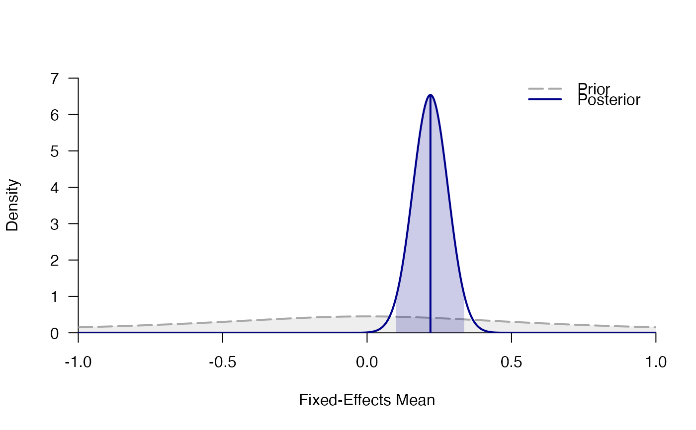

Includes six pre-registered replication studies testing whether participants feel more powerful if they adopt expansive as opposed to constrictive body postures. In the data set power_pose_unfamiliar, only those participants are included who were unfamiliar with the power pose effect.
power_pose power_pose_unfamiliar
A data frame with three variables:
studyAuthors of original study
n_high_powernumber of participants in high-power condition
n_low_powernumber of participants in low-power condition
mean_high_powermean rating in high-power condition on a 5-point Likert scale
mean_low_powermean rating in low-power condition on a 5-point Likert scale
sd_high_powerstandard deviation of ratings in high-power condition
sd_low_powerstandard deviation of ratings in low-power condition
t_valuet-value for two-sample t-test
dfdegrees of freedom for two-sample t-test
two_sided_p_valuetwo-sided p-value of two-sample t-test
one_sided_p_valueone-sided p-value of two-sample t-test
effectSizeCohen's d, the standardized effect size (high vs. low power)
SEStandard error of Cohen's d
Data frame with 6 rows and 13 variables
An object of class data.frame with 6 rows and 13 columns.
See Carney, Cuddy, and Yap (2010) for more details.
Carney, D. R., Cuddy, A. J. C., & Yap, A. J. (2010). Power posing: Brief nonverbal displays affect neuroendocrine levels and risk tolerance. Psychological Science, 21, 1363–1368.
Gronau, Q. F., Erp, S. V., Heck, D. W., Cesario, J., Jonas, K. J., & Wagenmakers, E.-J. (2017). A Bayesian model-averaged meta-analysis of the power pose effect with informed and default priors: the case of felt power. Comprehensive Results in Social Psychology, 2(1), 123-138. doi: 10.1080/23743603.2017.1326760
#> study n_high_power n_low_power mean_high_power mean_low_power #> 1 Bailey et al. 46 48 2.619565 2.385417 #> 2 Ronay et al. 53 55 2.122642 1.945455 #> 3 Klaschinski et al. 101 99 3.001980 2.727273 #> 4 Bombari et al. 99 101 2.242424 1.990099 #> 5 Latu et al. 100 100 2.575000 2.445000 #> 6 Keller et al. 135 134 2.733333 2.578358 #> sd_high_power sd_low_power t_value df two_sided_p_value one_sided_p_value #> 1 0.9320514 0.9353551 1.215348 92 0.22734289 0.11367144 #> 2 0.7652655 0.7915803 1.182015 106 0.23984447 0.11992223 #> 3 0.8234051 0.9000928 2.252778 198 0.02537006 0.01268503 #> 4 0.9268215 0.8543424 2.002484 198 0.04659697 0.02329848 #> 5 0.7893707 0.9767370 1.035168 198 0.30185311 0.15092656 #> 6 1.0541319 0.9978444 1.238098 267 0.21676741 0.10838370 #> effectSize SE #> 1 0.2507640 0.2071399 #> 2 0.2275180 0.1931046 #> 3 0.3186069 0.1423228 #> 4 0.2832082 0.1421356 #> 5 0.1463949 0.1416107 #> 6 0.1509773 0.1221166# Simple fixed-effects meta-analysis mfix <- meta_fixed(effectSize, SE, study, data = power_pose ) mfix#> ### Bayesian Fixed-Effects Meta-Analysis ### #> Prior on d: 't' (location=0, scale=0.707, nu=1) with support on the interval [-Inf,Inf]. #> #> # Bayes factors: #> (denominator) #> (numerator) fixed_H0 fixed_H1 #> fixed_H0 1.0 0.0223 #> fixed_H1 44.8 1.0000 #> #> # Posterior summary statistics of fixed-effects model: #> mean sd 2.5% 50% 97.5% hpd95_lower hpd95_upper n_eff Rhat #> d 0.219 0.061 0.1 0.219 0.339 0.098 0.337 NA NA